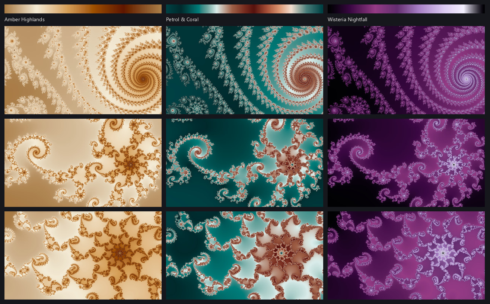
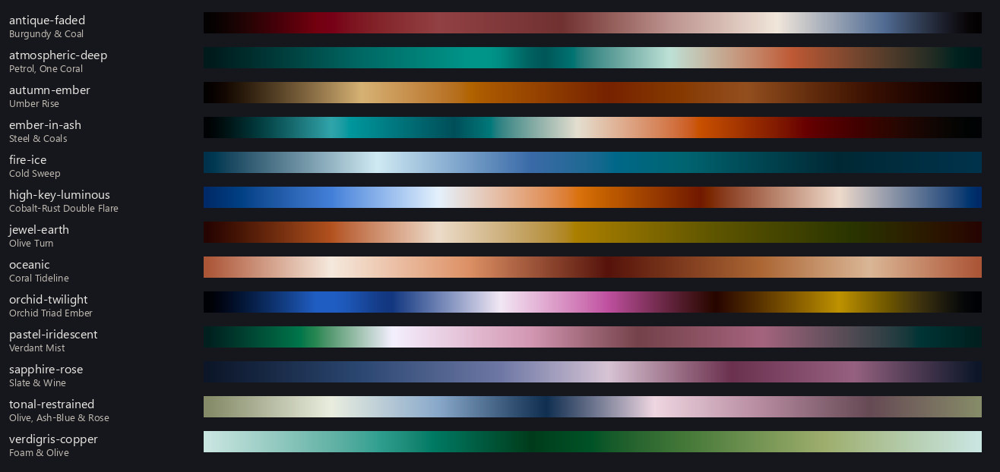
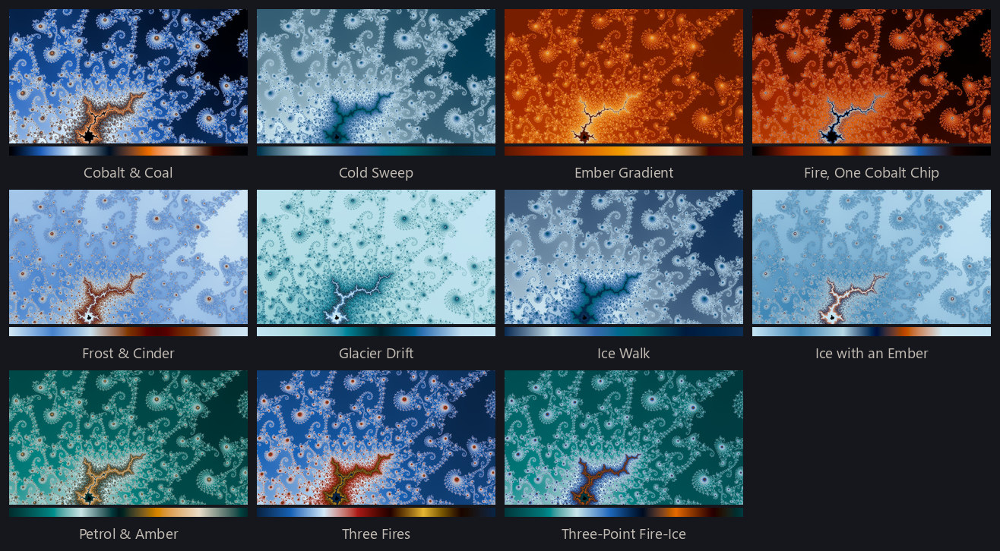
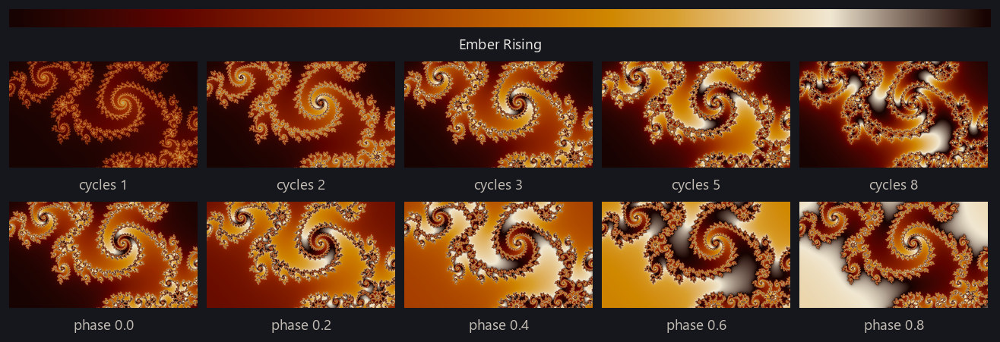
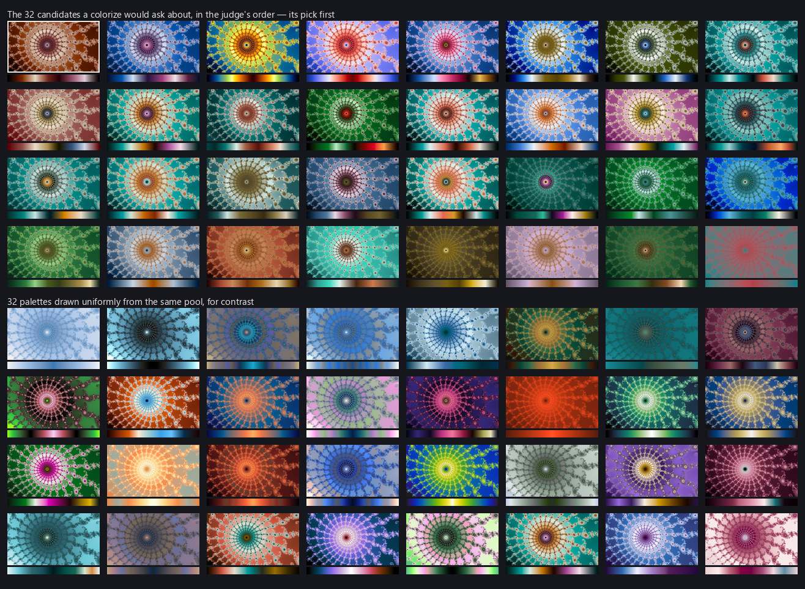
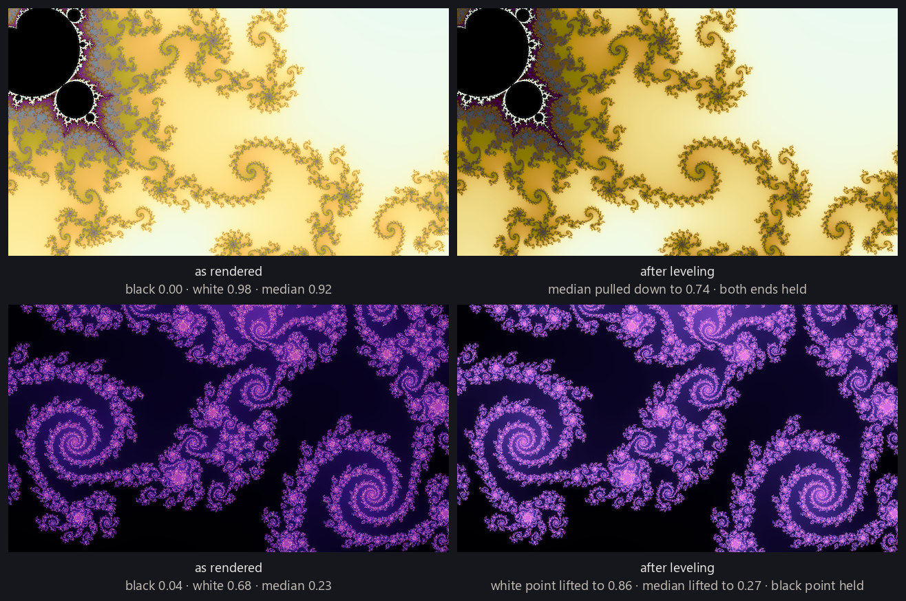

Finding a good location is slow; coloring it is fast. For each pixel the renderer computes a field — the smooth escape value from rendering fundamentals, or whatever the rendering mode measures — and that is where nearly all the work goes. For the eight modes that read one scalar field, coloring is a separate step over stored numbers, so the field can be kept and every palette tried on it is a lookup over the same array. That is how the pipeline chooses a palette whatever mode it is about to draw: every candidate it ranks is a recoloring of one stored smooth field. A location that took an hour of searching to find can be shown in a hundred colorings in seconds, which is why everything in this section is affordable.

A palette is a short list of stops: positions from 0 to 1, each with a color. The engine fills in between the stops by linear interpolation in OKLab, and bakes the result into a table of 4,096 colors; each pixel's field value indexes that table. OKLab is a color space arranged so that equal distances in its coordinates look equally different to the eye. That matters for the in-between colors: interpolating from blue to yellow in ordinary RGB passes through a dull gray-brown, because the midpoint of the coordinates is not the midpoint of what you see; in OKLab the midpoint keeps the lightness and colorfulness the two ends had, so the blend stays clean. A cyclic palette ends with the color it began with, so when a render sweeps the table more than once there is no seam where it starts again. A sequential palette has two different ends, and repeating one slams the last color against the first. Folding is the fix: the palette is baked as an out-and-back, forward and then backward, so it meets itself at the cost of half its length. Folding is a setting on the render rather than a property of the palette, and nothing applies it on a palette's behalf; every part of the pipeline sets it exactly when the palette is sequential. Every palette made for this project is cyclic, and the 156 sequential ones in the library all came from somewhere else.
Where the palettes came from
The library holds 901 palettes (data/palettes/). Just under two hundred are ramps converted from scientific plotting libraries — matplotlib, colorcet, cmasher. They are fine on a chart and often dull on a fractal: one hue, one sweep from dark to light, no event anywhere along the ramp. Over a third of the library, 334 of them, was distilled from fractal pictures in my own wallpaper collection, and those set the standard the rest are built to: a wide range of lightness; darks and lights that still carry a hue; a bright band that reads as light; and at least one of pure-hue contrast, a big warm-to-cool swing, or several hues held in balance. The remaining 375 were written by Claude. The palette prompt states those properties as rules, names a mood family (fire-ice, jewel-earth, oceanic, and so on), gives each batch a handful of structural templates to spread across, and ends with a schema. A request looks like: twenty palettes, fire-ice, moderate complexity, bright on dark. A small script checks the mechanical rules before anything is rendered. The prompt, the script, and each authored palette's record — its mood family, its templates, and its stops as written — ship with the repository (data/palettes/generator_prompt.md, validate_palettes.py, provenance.jsonl). The prompt runs as-is in Claude; see make your own palettes.
Two hundred of the authored palettes were written to a second aim. Sorting a finished wallpaper into fifty-two named colors and measuring how much of the frame each one takes says which colors the collection actually reaches, and over 246 finished renders it reaches very few: the average picture gives a tenth or more of itself to about three of the fifty-two, and eight of them — a band of greens, limes, teals, cyans and yellows — to none at all. A batch aimed at one of those is the same request with the mood family named for a color instead of a mood, and the figure below shows ten such families beside the thirteen written for mood. Aiming works where the color can be made: the thinnest green, lime and teal cells roughly doubled the number of palettes that carry them. It does not work everywhere — a batch aimed at a dark vivid teal or cyan lands on the muted twin beside it, which sits close enough in OKLab that the measurement cannot tell the two apart, and the muted blues, which no batch was aimed at, gained nothing. All two hundred are in the library, and the pool a candidate set is drawn from has since admitted them.


The library is one pool — converted ramps, extracted palettes and authored ones together, cyclic beside sequential — and what organizes it is not where a palette came from but what it looks like. Nine hundred names in source order would say nothing about that. Each palette therefore gets a descriptor: the ramp is drawn as a render sweeps through it, folded if it is sequential, 32 colors are sampled evenly along it, and each is written in OKLab — 96 numbers per palette. Distance between two descriptors is distance between two palettes, and it is the same distance the pipeline uses when it assembles candidate sets, below. Clustering on that distance splits the library into sixteen groups (data/palettes/clusters.jsonl). The whole library, one strip per palette, grouped the same way, is on its own page.
Applying a palette
A palette is not applied bare. The field value is first placed on the ramp, and that placement is a small recipe the render records under the engine's own names: gamma, a power applied to the value first; cycles, how many times the ramp is traversed across the range of field values; phase, where along the ramp the traversal starts; and mirror, the fold above. The same palette at one cycle reads as a slow wash across the picture; at eight it reads as fine banding that follows the geometry. The figure below shows one location and one palette under several of those settings.

Not every palette sits well on every location. The field decides how much of the ramp a picture uses and where its mass falls, so a palette that is luminous on one location is a dark smear on the next. The figure below shows one location under a spread of palettes; a few are right and most are not. A person will usually see which is which; no rule about the ramp alone will.
To make that call automatically, the pipeline trains a palette judge for exactly this question. It has the smallest job of the four judges: given one location and 32 candidate colorings of it, pick one. Those candidates vary by palette and by nothing else — each is the same stored field at gamma 1, one cycle, phase 0. The judge sees the rendered frame only, never a description of the palette, and it is trained to order the candidates of a single location, so its scores mean nothing across locations; they are a ranking inside one set (models/palette/). The judge that ships was trained to reproduce the scores of an earlier palette judge, over 2,000 locations, 32 candidates each, held out by location; and on 377 real candidate sets its top pick matches that judge's 53% of the time, with a median rank correlation of 0.91 (models/palette/acceptance.json). The ceiling for that comparison is 59%: shown this engine's renders of the same candidates, the teacher picks what it originally picked only that often, and a judge cannot be asked to track its teacher more closely than the teacher tracks itself. That is below the bar I set, and it ships regardless; the figure at the end of the next section is the case for it.
Why diversity has to be built in
A pipeline that selects for quality converges on a theme. The palettes that score best on the most locations resemble one another, and without a counterweight the best wallpapers become variations on one color idea that happens to transfer well — I find fire- and ice-themed palettes are close to universal across locations and families, and left alone the pipeline would find that too. The counterweight is in how a candidate set is built. The set for a location is a neighborhood in palette space: one anchor palette and its 31 nearest neighbors by the descriptor distance above, so the judge always chooses among palettes that belong together rather than among 32 unrelated ones. The pool a set is drawn from holds all but one of the 901, and 65 small sets inside it are near-duplicates of one another — near enough that nothing looking at a wallpaper could tell one from another — so a run stands one member of each and draws from 822. Anchors are drawn without replacement across a run, so no map anchors twice until all 822 have anchored once, and two locations in one release are asked about different regions of palette space. Nothing downstream adds to that: the diversity rule in from locations to wallpapers caps near-duplicate locations rather than palettes, and two released wallpapers may share a palette — across the tracked runs, 149 released pictures used 92 distinct palettes.

Leveling
A palette that sits well on one location can land too dark, too light, or too flat on another, because the field decides how much of the ramp is used. Autolevel corrects for that after the pick. It measures three things about the finished picture — its black point, its white point, and its median lightness — against a band derived from 48 finished wallpapers (data/coloring/levels_band.json). Inside the band it does nothing at all; outside it, it bends the palette's lightness along its own stops without reordering them and renders once more. Across the tracked runs it acted on 39% of renders. It is used only for rendering modes where the palette's tone is the picture's tone — not for the direct traps, whose tone belongs to their flat ground, and not for itinerary, which reads a different place in the ramp at every sample.
